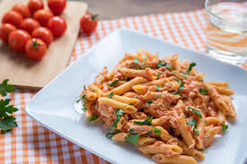

Home
La pasta al tonno. La pasta degli studenti poveri

Descrizione
A pezz di merd povero stronzo, che ci fai qua?
Vuoi fare la pasta al tonno? Ma c'hai mica i soldi per comprare il tonno? Guara che costa piu della carne bovina oggigiorno.
Vabbo! Se avete poco tempo a disposizione, ma non volete rinunciare ad un piatto completo e sfizioso, le mezze maniche al tonno fanno proprio al caso vostro! Le mezze maniche al tonno sono un primo piatto semplice e gustoso, a base di tonno sott’olio e passata di pomodoro, da preparare per un pranzo veloce o come salva cena nella stagione invernale e in quella estiva. Le mezze maniche al tonno sono forse il primo piatto che si impara a fare da studenti fuori sede! E' veloce, gustoso, saporito e ricco.
Ingredienti
-
Mezze maniche rigate 450 gr
-
Soffrittino 200 gr
-
Tonno 300 gr
-
Passata 400 gr
-
Sale quanto basta mannaggia alla madonna
-
L'olio dio cane maledetto, quante volte te lo devo dire 2 cucchiai
-
Acciughine queste te le infili nel retto
-
We, metti l'olio e fai il soffrittino velosc
-
Poi a doratura della scipolla metti la passata
-
A questo punto devi aver gia messo la pasta a cuocere. Ah, non hai ancora messo manco l'acqua?? Ah pezz d'merd, vie qua, viecce, strunz, metti quell'acqua
-
Aggiungi il tonno al soffritto con la passata e fai cuocere un paio di minuti
-
Aggiungi la porco dio di pasta al dente
-
We, agg' finit, magna quanta ne vuoi. Punto.